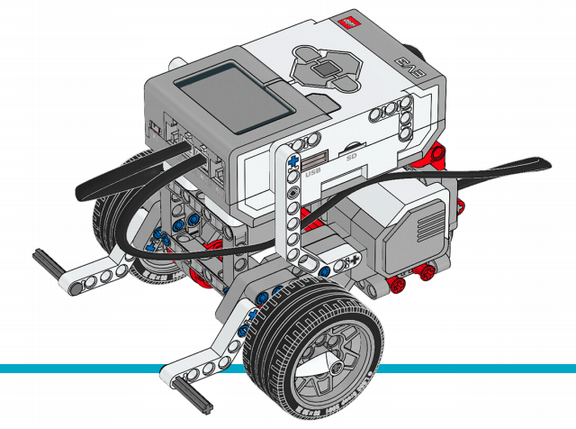

1. Introduction
Create your first project is not complicated but the process requires time and this is the reason to
develop a Template project using Gradle.
The advantages of the usage of the Template project are:
-
Build System configured
-
Dependencies defined
-
Tasks defined to interact with the Brick
| If you installed Debian Jessie on your Brick, use the branch Master of the repository https://github.com/ev3dev-lang-java/template_project_gradle/ but if you installed Debian Stretch on your Brick, use the branch develop of the repository https://github.com/ev3dev-lang-java/template_project_gradle/tree/develop |
2. Create your first project using the Gradle template project
| The whole guide is designed for Debian Jessie |
2.1. Clone/Download the project in your computer
The project Template project is hosted on Github and it possible to download the content of a Git branch or
execute the following statement to clone the project in local.
git clone https://github.com/ev3dev-lang-java/template_project_gradle.gitNow you have you have in local the project. Open the project with your favourite Java IDE.
2.2. Configure the Brick IP
In the project opened, open the file: config.gradle: to update IP of you Brick connected to the network
where your computer is connected:
remotes {
ev3dev {
host = '10.0.1.3'
user = 'robot'
password = 'maker'
}
}to check that the Java IDE connects with the Brick, execute the following Gradle task:
./gradlew testConnectionIf the execution of the task was successfully then your computer has a direct connection with your Brick.
2.3. Deploy the default program
The template project includes a Default program named MyFirstRobot.java.
The example was designed to move a Mobile Robot with 2 motors connected to Port A & Port B.
If you need inspiration to create your Physical robot, LEGO Education provides some excellent
Building Instructions Guides

Follow the link to build the Base Robot.
MyFirstRobot.java
package examples;
import ev3dev.actuators.lego.motors.EV3LargeRegulatedMotor;
import ev3dev.sensors.Battery;
import lejos.hardware.port.MotorPort;
import lejos.utility.Delay;
public class MyFirstRobot {
public static void main(final String[] args){
System.out.println("Creating Motor A & B");
final EV3LargeRegulatedMotor motorLeft = new EV3LargeRegulatedMotor(MotorPort.A);
final EV3LargeRegulatedMotor motorRight = new EV3LargeRegulatedMotor(MotorPort.B);
//To Stop the motor in case of pkill java for example
Runtime.getRuntime().addShutdownHook(new Thread(new Runnable() {
public void run() {
System.out.println("Emergency Stop");
motorLeft.stop();
motorRight.stop();
}
}));
System.out.println("Defining the Stop mode");
motorLeft.brake();
motorRight.brake();
System.out.println("Defining motor speed");
final int motorSpeed = 200;
motorLeft.setSpeed(motorSpeed);
motorRight.setSpeed(motorSpeed);
System.out.println("Go Forward with the motors");
motorLeft.forward();
motorRight.forward();
Delay.msDelay(2000);
System.out.println("Stop motors");
motorLeft.stop();
motorRight.stop();
System.out.println("Go Backward with the motors");
motorLeft.backward();
motorRight.backward();
Delay.msDelay(2000);
System.out.println("Stop motors");
motorLeft.stop();
motorRight.stop();
System.out.println("Checking Battery");
System.out.println("Votage: " + Battery.getInstance().getVoltage());
System.exit(0);
}
}To deploy the example on your brick, open a terminal and type:
./gradlew deployAndRun2.4. Add a new Java program
Once you feel comfortable with the Template project and the Gradle Tasks, you could feel the need to add your own program. In this case, add in the project the new Java file like this one:
HelloWorld.java
public class HelloWorld {
public static void main(String[] args) {
// Prints "Hello World" to the terminal window.
System.out.println("Hello World");
}
}In order to run the new program, you will have to open the file MANIFEST.MF and update the field about Main-Class
indicating the new class, in this case HelloWorld
Manifest-Version: 1.0
Implementation-Title: EV3Dev-lang-java // Template project
Implementation-Version: 0.3.0
Implementation-Vendor: YOUR NAME
Main-Class: HelloWorldTo deploy the new example on your brick, open a terminal and type:
./gradlew deployAndRun3. Create your first project from scratch
Another alternative is the creation of a project from Scratch using Maven/Gradle.
To start a new project with this library, add the following repository and dependency.
<repositories>
<repository>
<id>jitpack.io</id>
<url>https://jitpack.io</url>
</repository>
</repositories><dependency>
<groupId>com.github.ev3dev-lang-java</groupId>
<artifactId>ev3dev-lang-java</artifactId>
<version>0.7.0</version>
</dependency>Further information about the dependency
4. Playing with more examples
The project has a repository with several examples about the usage of the different libraries.
Visit the repository about examples to download and test more examples.
5. The Next Step
Continue with the next section about: Fundamentals of Robotics